Canviar textos, imatges i llistes, publicar notícies al blog i desar els canvis, directament des de la mateixa pàgina.
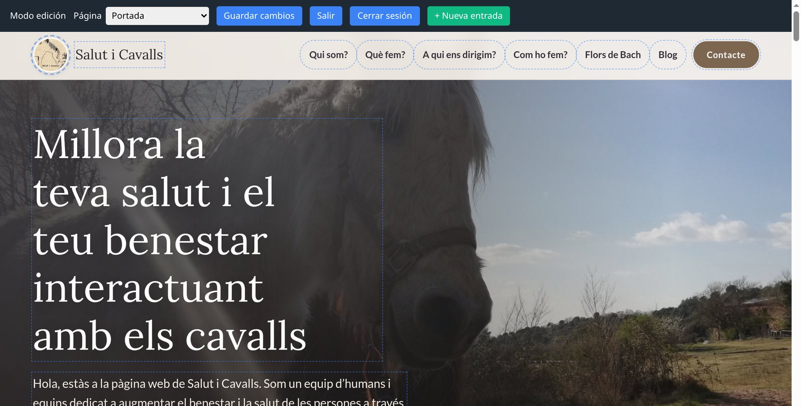
La vostra web funciona amb Neutron, un gestor de continguts senzill: no cal cap programa ni cap tauler a part. Els canvis es fan sobre la mateixa pàgina que veuen els visitants: feu clic en un text, l'escriviu de nou i premeu Guardar cambios.
Títols, paràgrafs, telèfons, horaris, preus… qualsevol text marcat com a editable.
Feu clic en una foto per substituir-la per una altra del vostre ordinador.
Afegir, treure i ordenar elements: fotos d'una galeria, tarifes, serveis, formacions…
Si la web té blog o secció de notícies, també hi podreu crear entrades noves, desar-les com a esborrany i publicar-les quan vulgueu.
Els textos de la vostra web són en el vostre idioma, però els botons de l'editor (Guardar cambios, Salir, + Nueva entrada…) apareixen en castellà. En aquesta guia els escrivim tal com els veureu a la pantalla.
L'editor funciona en qualsevol navegador actual (Chrome, Firefox, Safari, Edge). Es pot fer servir des del mòbil, però és més còmode amb pantalla gran i ratolí.
Afegiu ?admin al final de l'adreça de la web i premeu Retorn. Per exemple:
https://www.lavostraweb.cat/?admin
Apareixerà una finestra que demana la contrasenya. Escriviu-la i premeu Entrar.
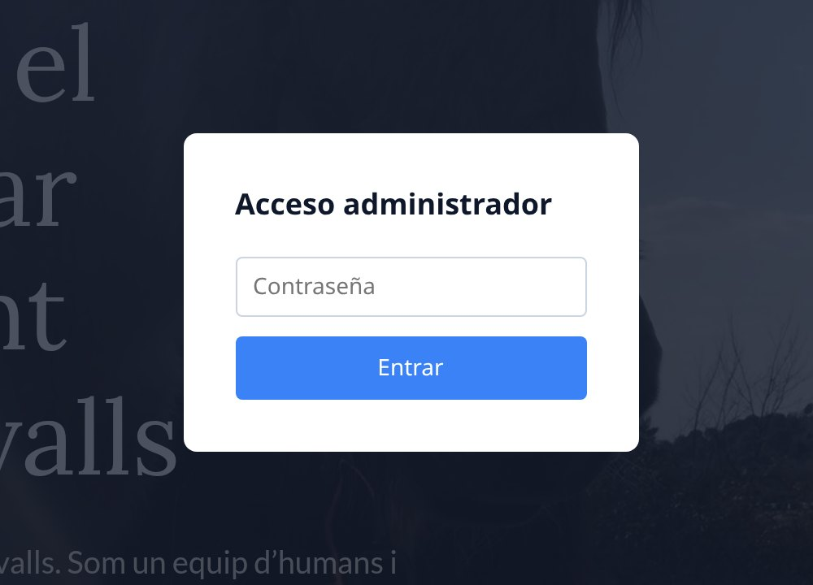
Després de 5 intents fallits, l'accés queda bloquejat durant 15 minuts. No compartiu la contrasenya i, si l'heu oblidat o creieu que algú altre la sap, demaneu-nos-en una de nova.
Mentre teniu la sessió oberta, podeu tornar a l'editor des de qualsevol pàgina afegint ?admin a l'adreça. Els visitants mai veuen l'editor: només qui ha entrat amb la contrasenya.
Un cop dins, a dalt de tot apareix una barra fosca i els elements que es poden editar queden marcats amb una vora de punts.
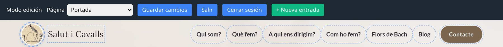
| Botó | Per a què serveix |
|---|---|
| Página | Llista de les pàgines de la web: trieu-ne una per anar-hi sense sortir de l'editor (només si la web té més d'una pàgina). |
| Idioma | La mateixa pàgina en un altre idioma (només a les webs multilingües). |
| Guardar cambios | Desa tot el que heu canviat a la pàgina. Fins que no el premeu, els canvis no queden desats. |
| Salir | Torna a veure la pàgina com un visitant, però manté la sessió oberta. |
| Cerrar sesión | Surt de l'editor del tot. Feu-ho sempre en un ordinador compartit. |
| + Nueva entrada | Crea una entrada nova al blog (surt a les pàgines que tenen un llistat d'entrades). |
A la dreta de la barra hi ha els avisos: Cambios sin guardar quan heu tocat alguna cosa, Guardando... mentre es desa i Guardado ✓ quan ja està.
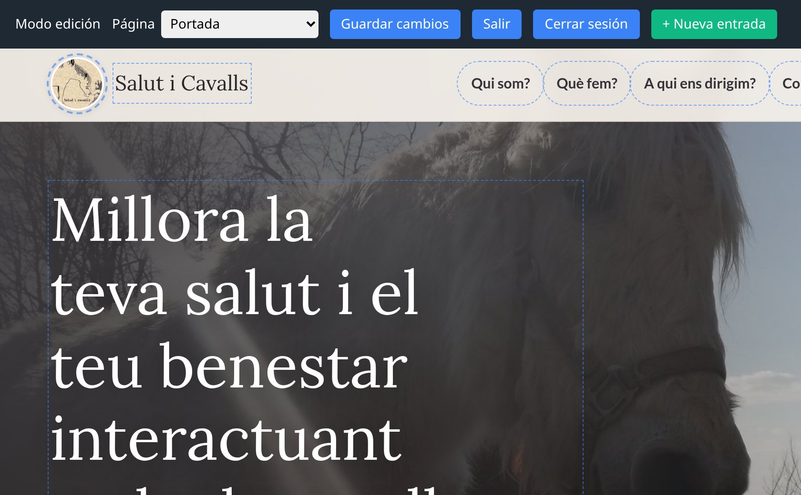
Hi ha dades que surten en més d'un lloc (el telèfon a la capçalera i al peu, per exemple). Si en canvieu un, els altres es canvien alhora.
Aquests textos són text pla: no admeten negretes ni enllaços, i l'aspecte (lletra, mida, color) ja el posa el disseny. Si enganxeu text d'un altre lloc, s'hi enganxa només el text.
Al menú i als botons, un clic serveix per editar el text. Per anar a la pàgina on porta l'enllaç, feu
Ctrl + clic (Cmd + clic al Mac).
Mantingueu els títols curts: el disseny està pensat per a la llargada dels textos actuals, i un títol molt llarg pot quedar malament al mòbil.
| Formats | JPG, PNG, GIF o WebP. No s'admeten SVG ni documents (PDF, Word…). |
|---|---|
| Mida màxima | 5 MB per imatge. |
| Recomanat | Fotos en JPG d'uns 1.600 píxels d'amplada. Les fotos del mòbil solen ser molt més grans: reduïu-les abans i la web anirà més ràpida. |
| Enquadrament | Moltes imatges es retallen automàticament per encaixar en el disseny (quadrades, apaïsades…). Deixeu el motiu principal al centre de la foto. |
Feu servir només fotos pròpies o amb permís. Si hi surten persones, assegureu-vos que n'estan d'acord.
Moltes parts de la web són llistes: les fotos d'una galeria, les tarifes, els serveis, els paràgrafs d'un text llarg, les formacions… Cada element de la llista té, a la cantonada, dos botons petits:
| ↑ | Pujar: mou l'element una posició amunt. Per baixar-ne un, pugeu el de sota. |
| ✕ | Treure: elimina l'element. Sempre n'ha de quedar com a mínim un. |
| + Afegir… | Sota cada llista: n'afegeix un element nou al final, copiat de l'últim. Després canvieu-ne el text i la imatge. |
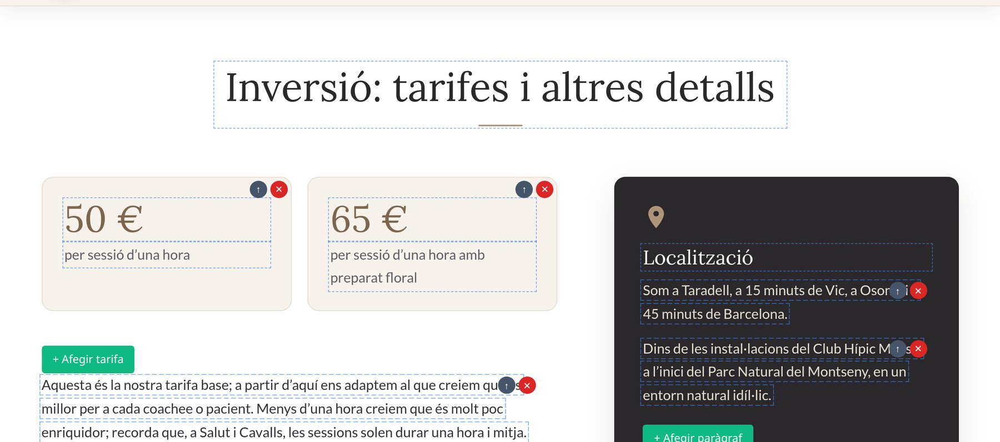
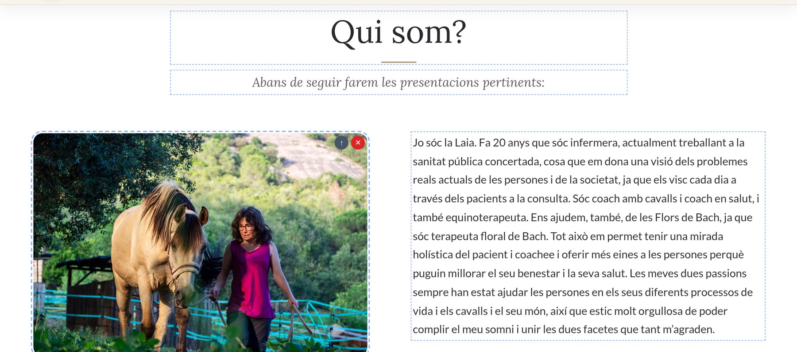
Les llistes poden tenir llistes a dins (per exemple, les seccions d'una carta, cadascuna amb els seus plats): funcionen igual, cada nivell amb els seus botons.
Les icones de les xarxes socials (Instagram, Facebook, YouTube…) tenen l'adreça editable. En mode d'edició, feu clic a la icona i s'obrirà una finestra amb l'adreça actual:
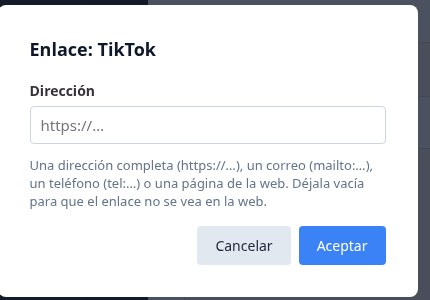
https://www.instagram.com/…) i premeu Aceptar.Com sempre, després premeu Guardar cambios.
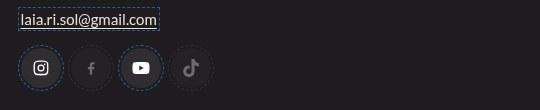
Si un enllaç amb text (per exemple, un correu) també té l'adreça editable, al costat hi veureu un botó petit 🔗. Si voleu una xarxa que no hi és, demaneu-nos-la i l'afegirem.
Res del que canvieu no es publica fins que premeu Guardar cambios. En aquell moment els canvis ja els veu tothom.
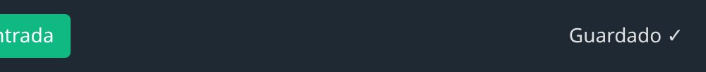
Nosaltres podem fer i recuperar còpies de seguretat de la web. Si s'esborra alguna cosa per error, aviseu-nos com més aviat millor.
Si la web té més d'una pàgina, a la barra hi ha el desplegable Página: trieu-ne una i s'obre ja en mode d'edició.
També podeu fer Ctrl + clic en un enllaç del menú. La capçalera, el menú i el peu són comuns: si els canvieu en una pàgina, canvien a totes.
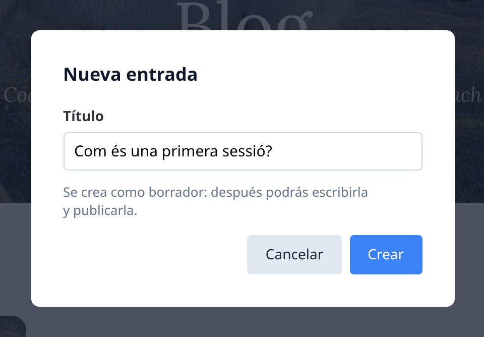
L'adreça (per exemple /blog/com-es-una-primera-sessio) es crea a partir del primer títol i ja no canvia,
encara que després el modifiqueu. Així els enllaços que ja s'han compartit continuen funcionant.
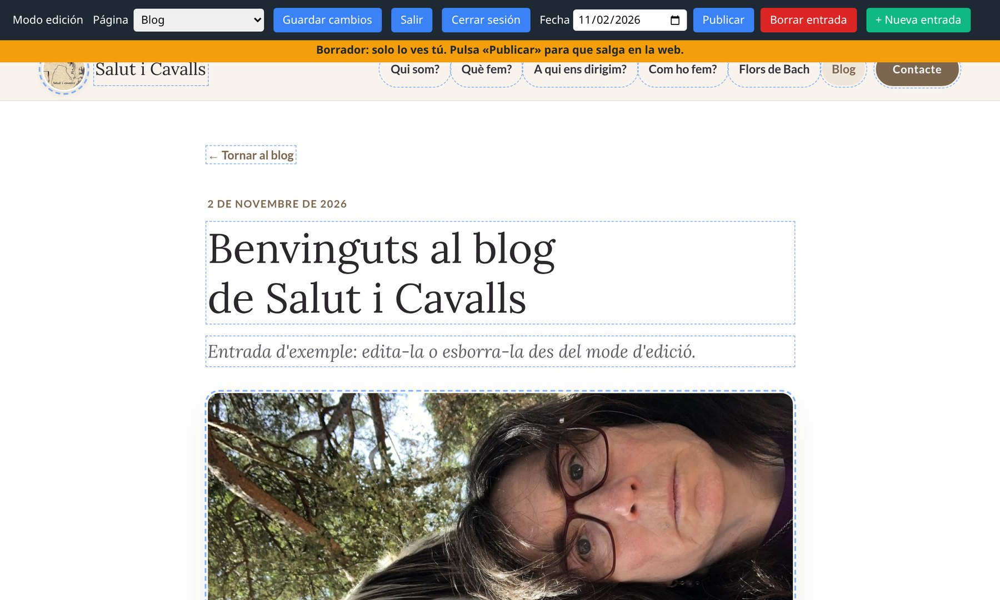
A la pàgina de l'entrada podeu editar el títol, el resum (el text curt que surt al llistat), la imatge (clic per canviar-la) i el cos del text. El cos sí que admet format, amb aquesta barra:
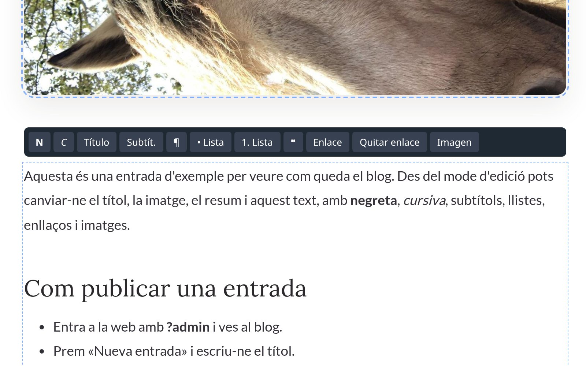
| N C | Negreta i cursiva del text seleccionat. |
| Título Subtít. | Converteix el paràgraf en un subtítol (gran o petit). ¶ el torna a paràgraf normal. |
| • Lista 1. Lista | Llista amb punts o numerada. |
| ❝ | Cita destacada. |
| Enlace Quitar enlace | Seleccioneu un text i poseu-hi l'adreça (https://…, mailto:… o una pàgina de la web), o traieu-lo. |
| Imagen | Insereix una foto on teniu el cursor; us demanarà una breu descripció per a qui no la pot veure. |
Si enganxeu text d'un Word o d'una altra web, se'n conserva només el format permès (negretes, llistes, enllaços…); la resta s'elimina perquè la web mantingui el seu disseny.
| Fecha | La data que surt a l'entrada. Les entrades s'ordenen per data, de la més nova a la més antiga. |
| Publicar | La fa visible a tothom (abans desa els canvis pendents). Un cop publicada, el botó passa a dir Pasar a borrador, per amagar-la. |
| Borrar entrada | L'elimina de la web, després de demanar confirmació. Si ha estat un error, aviseu-nos: en guardem una còpia. |
Al llistat del blog, mentre sou a l'editor, els esborranys porten l'etiqueta «Borrador». Els visitants no els veuen.
Si la web té diversos idiomes, a la barra apareix el desplegable Idioma, que obre la mateixa pàgina en un altre idioma.
Si la web té formulari de contacte, els missatges us arriben per correu electrònic, amb les dades que ha escrit la persona. Si responeu el correu, la resposta va directament a ella.
L'editor està pensat perquè el contingut el porteu vosaltres i el disseny es mantingui sempre correcte. Per això hi ha coses que no es poden canviar des de la pàgina; si en necessiteu alguna, demaneu-nos-la i la farem nosaltres:
Colors, tipus de lletra, mida dels elements, ordre de les seccions, logotip de la capçalera.
Seccions o pàgines noves, opcions noves al menú, un formulari o un mapa nous.
Les adreces on porten els menús i els botons (sí que en podeu canviar el text). Les de les xarxes socials, sí: vegeu l'apartat 6.
Avís legal, privacitat i cookies; contrasenya oblidada; correu on arriben els missatges.
| Vull… | Com |
|---|---|
| Entrar | Adreça de la web + ?admin i la contrasenya. |
| Canviar un text | Clic al text, escriure, Guardar cambios. |
| Canviar una foto | Clic a la foto, triar-ne una altra, esperar «Imagen lista», Guardar cambios. |
| Afegir o treure | + Afegir… sota la llista; ✕ per treure, ↑ per ordenar. |
| Anar a una altra pàgina | Desplegable Página o Ctrl + clic a l'enllaç (deseu abans). |
| Escriure al blog | + Nueva entrada, títol, escriure, Publicar. |
| Acabar | Cerrar sesión. |
Deseu sovint · Reviseu els canvis també al mòbil · Reduïu les fotos abans de pujar-les · Tanqueu la sessió en ordinadors compartits · Davant qualsevol dubte, pregunteu-nos abans de treure contingut.